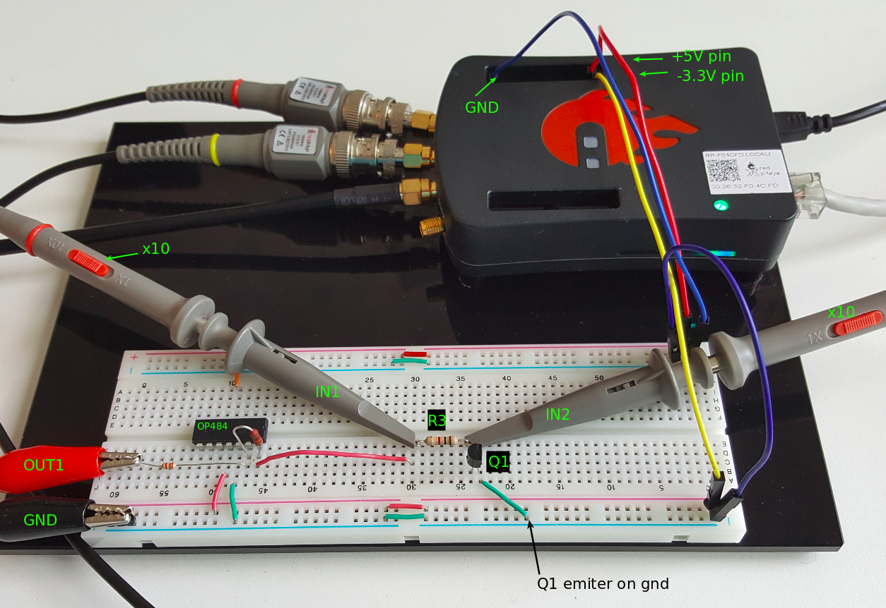
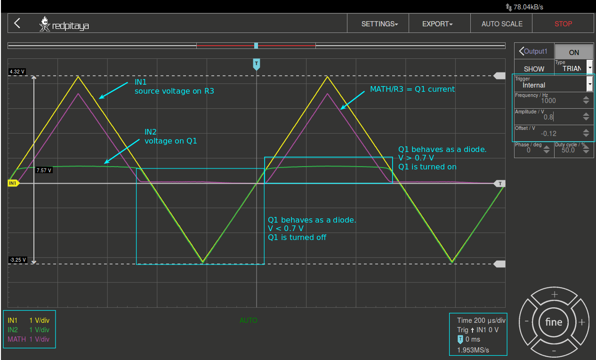
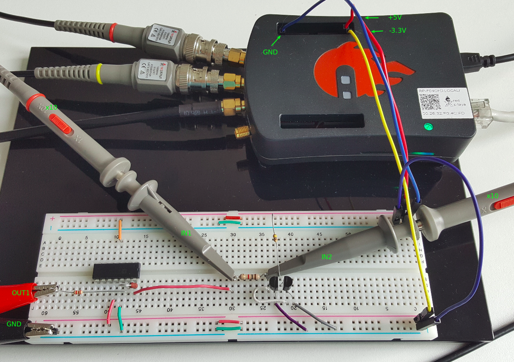

22. Der BJT-Transistor ist als Diode geschaltet¶
22.1. Zielsetzung¶
Der Zweck dieses Versuchs ist es, die Vorwärts- und Rückwärtsstrom-/Spannungseigenschaften eines als Diode geschalteten Bipolartransistors („Bipolar junction transistor“, BJT) zu untersuchen.
22.2. Hinweise¶
In diesen Tutorials verwenden wir die Terminologie aus dem Benutzerhandbuch, wenn Sie sich auf die Verbindungen zur Red Pitaya STEMlab - Board - Hardware beziehen.
Oszilloskope- & Signalgenerator Anwendung wird zum Erzeugen und Beobachten von Signalen auf der Schaltung verwendet.
Die für die Spannungsversorgung +5V, -3.3V und +3.3V verwendeten Steckerstifte sind in der Dokumentation aufgeführt.
Hinweis
Red Pitaya STEMlab-Ausgänge können Spannungssignale mit einem maximalen Ausgangsbereich von +/- 1V (2Vpp) erzeugen. Für diesen Versuch sind höhere Signalamplituden erforderlich. Aus diesem Grund werden wir einen OP484 Inverter verwenden, um die Signalverstärkung von OUT1 / OUT2 zu ermöglichen und einen Spannungshub von \(+4,7\,V\) bis \(-3,2\,V\) zu erreichen. Ein OP484 wird von STEMlab \(+ 5\,V\) und \(-3.3\,V\) Spannungsschienen versorgt. Die Verstärkung des invertierenden Verstärkers wird auf \(\approx5\) gesetzt, wobei gilt \(R_i = 2.2\,k\Omega\) und \(R_f = 10\,k\Omega\)
Versuchen Sie zu beantworten, warum wir ein OP484 anstelle von OP27 oder OP97 verwendet haben. (Hinweis: Rail-to-Rail).
22.3. Materialien¶
- Red Pitaya STEMlab
- OP484 Quad-Rail-Rail-Operationsverstärker
- \(1\,k\Omega\) Widerstand
- \(10\,k\Omega\) Widerstand
- \(2,2\,k\Omega\) Widerstand
- kleinsignal NPN-Transistor (2N3904)
- kleinsignal PNP-Transistor (2N3906)
- lötfreies Steckbrett
- 9V Batterie/Labornetzteil
Ein NPN-Transistor, der wie in Abb. 22.1 gezeigt angeschlossen ist, verhält sich wie eine reguläre Diode. Wir können dies durch Messen der NPN-Antwort unter Verwendung der Oszilloskop- & Signalgenerator-Anwendung zeigen.

Abb. 22.1 NPN als Diodenanschlussdiagramm
Bemerkung
Beachten Sie, dass die in Abb. 22.1 (links) gezeigte Verstärkerschaltung nicht das Hauptthema dieses Experiments ist. Diese Schaltung wird nur hinzugefügt, um das Signal OUT1 zu verstärken.
Von hier aus können Sie den Punkt \(-5 \times V_{OUT1}\) als Haupterregungssignal betrachten.
22.4. Verfahren¶
Bauen Sie die Schaltung aus Abb. 22.1 auf dem Steckbrett auf. Setzen Sie für \(R1 = 2,2\,k\Omega\), \(R2 = 10\,k\Omega\) und \(R3 = 1\,k\Omega\) ein.
Abb. 22.2 npn-Transistor als Diodenverbindung auf dem Steckbrett
Warnung
Bevor Sie die Schaltung an die STEMlab-Pins -3,3V und +3,3V anschließen, überprüfen Sie nochmal Ihre Schaltung. Die Spannungsversorgungsstifte -3,3V und +3,3V haben keine Schutzschaltung und können im Falle eines Kurzschlusses beschädigt werden.
Starten Sie die Anwendung Oszilloskop & Signalgenerator
Stellen Sie im Menü OUT1-Einstellungen den Amplitudenwert auf \(0,8\,V\), den DC-Offset auf \(-0,12\,V\) und die Frequenz auf \(1\,kHz\) ein, um die Eingangsspannung anzulegen. Wählen Sie im Wellenform-Menü TRIANGLE, deaktivieren Sie SHOW und wählen Sie Enable.
Stellen Sie sicher, dass IN1, IN2 und MATH \(V/div\) auf der linken unteren Seite des Bildschirms auf \(1\,V/div\) eingestellt sind (Sie können \(V/div\) einstellen, indem Sie den gewünschten Kanal auswählen und vertikalen +/- Regler verwenden)
Setzen Sie \(t/div\) Wert auf \(200\,us/div\) (Sie können \(t/div\) mit horizontalen +/- Regler einstellen)
Stellen Sie unter MATH-Kanaleinstellungen folgendes ein: math: IN1-IN2 und wählen Sie ENABLE.
Stellen Sie unter den Menüeinstellungen IN1 und IN2 den Messtaster auf x10 und den vertikalen Offset auf 0.
Abb. 22.3 npn-Transistor als Diodenmessungen
Aus Abb. 22.3 ist ersichtlich, dass der NPN BJT-Transistor in der, in Abb. 22.1 gezeigten Konfiguration, sich wie eine Diode verhält.
Vergleichen Sie die Ergebnisse mit den Diodenmessungen aus dem vorherigen Versuch.
22.5. VI-Kurvenmessungen¶
Da sich BJT wie eine Diode verhalten kann (vgl. Konfiguration in Abb. 22.1), können wir die VI-Charakteristik messen, wie wir es bei der Diodenmessungen getan haben.
Für diese Aufgabe verwenden wir die Jupyter Notebook Web-Anwendung. Wie man Jupyter Notebook startet und ein neues Projekt erstellt, ist in Abb. 22.5 dargestellt.
Bemerkung
Das Jupyter Notebook ist eine Webanwendung, mit der Sie Dokumente erstellen und freigeben können, die Live-Code, Gleichungen, Visualisierungen und erklärenden Text enthalten. Sie haben auch die Unterstützung der Jupyter-Anwendung mit Red Pitaya-Bibliotheken sichergestellt, die die Steuerung aller Funktionen der STEMlab-Boards ermöglichen: Signalerfassung, Signalerzeugung, digitale Signalsteuerung, Kommunikation usw. Das Jupyter-Notebook wird auf die gleiche Weise gestartet wie jede andere Anwendungen. Nach dem Start der Jupyter-Anwendung wird ein webbasiertes Notizbuch geöffnet. Diese Kombination aus Notebook, STEMlab und Python macht das STEMlab zu einem hervorragenden Werkzeug für das Prototyping und die schnelle Programmierung. Da Jupyter Notebook Text-, Gleichungs- und Bildbearbeitung ermöglicht, ist es ein perfektes Werkzeug für Tutorials, Beispiele und vieles mehr.

Abb. 22.4 Erstellen eines neuen Jupyter-Notebooks
Wenn Sie erfolgreich ein neues Jupyter-Notebook erstellt haben, kopieren Sie den untenstehenden Code und führen Sie ihn aus.
Der untenstehende Code erzeugt das gleiche Signal wie in Abb. 22.6, aber er zeichnet sie im XY-Diagramm auf.
Zum Messen der \(VI\) -Kurve wird ein „XY“-Plot benötigt, wobei die x-Achse die Diodenspannung \(IN_2\) und y-Achse ein Diodenstrom \((IN_1 - IN_2) / R_3\) darstellt.
Kopieren Sie den Code von unten in die Zelle 1
1 2 3 4 5 6 7 8 9 10 11 12 13 14 15 16 17 18 19 20 21 22 23 24 25 26 27 28 29 30 31 32 33 34 35 36 37 38 39 40 41 42 43 44 45 46 47 48 49 50 51 52 53 54 55 56 57 58 59 60 61 62 63 64 65 66 | # Import libraries
from redpitaya.overlay.mercury import mercury as overlay
from bokeh.io import push_notebook, show, output_notebook
from bokeh.models import HoverTool, Range1d, LinearAxis, LabelSet, Label
from bokeh.plotting import figure, output_file, show
from bokeh.resources import INLINE
output_notebook(resources=INLINE)
import numpy as np
# Initialize fpga modules
fpga = overlay()
gen0 = fpga.gen(0)
osc = [fpga.osc(ch, 1.0) for ch in range(fpga.MNO)]
# Configure OUT1 generator channel
gen0.amplitude = 0.8
gen0.offset = -0.12
gen0.waveform = gen0.sawtooth(0.5)
gen0.frequency = 2000
gen0.start()
gen0.enable = True
gen0.trigger()
# R1 resistor value
R1 = 1000
# Configure IN1 and IN2 oscilloscope input channels
for ch in osc:
ch.filter_bypass = True
# data rate decimation
ch.decimation = 10
# trigger timing [sample periods]
N = ch.buffer_size
ch.trigger_pre = 0
ch.trigger_post = N
# osc0 is controlling both channels
ch.sync_src = fpga.sync_src["osc0"]
ch.trig_src = fpga.trig_src["osc0"]
# trigger level [V], edge ['neg', 'pos'] and holdoff time [sample periods]
ch.level = 0.01
ch.edg = 'pos'
ch.holdoff = 0
# Initialize diode current and voltage
V = I = np.zeros(N)
# Plotting
hover = HoverTool(mode='vline', tooltips=[("V", "@x"), ("I", "@y")])
tools = "wheel_zoom, box_zoom, reset,pan"
p = figure(plot_height=500,
plot_width=900,
title="XY plot of transistor VI characteristic",
toolbar_location="right",
tools=(tools, hover))
p.xaxis.axis_label = 'Voltage [V]'
p.yaxis.axis_label = 'Current [mA]'
r = p.line(V, I, line_width=1, line_alpha=0.7, color="blue")
# get and explicit handle to update the next show cell
target = show(p, notebook_handle=True)
|
Erstelle eine neue Zelle (Einfügen -> Zelle darunter) und kopiere Code von unten hinein.
1 2 3 4 5 6 7 8 9 10 11 12 13 14 15 16 | # Measuring I, V and re-plotting
while True:
# reset and start
osc[0].reset()
osc[0].start()
# wait for data
while (osc[0].status_run()):
pass
V0 = osc[0].data(N-100)*10 # IN1 signal
V1 = osc[1].data(N-100)*10 # IN2 signal
I = ((V0-V1)/R1)*1E3 # 1E3 convert to mA
r.data_source.data['x'] = V0
r.data_source.data['y'] = I
push_notebook(handle=target)
|
Führen Sie Zelle 1 und Zelle 2 aus. Hinweis Zelle 2 ist eine Hauptschleife für die Erfassung und Neuaufnahme. Wenn Sie die Erfassung stoppen, führen Sie einfach nur Zelle 2 aus, um die Messungen erneut zu starten.
Nach dem Ausführen des obigen Codes sollten Sie die Diode VI-Charakteristik erhalten, wie in Abb. 22.5 gezeigt.

Abb. 22.5 BJT VI-Charakteristik gemessen mit Jupyter Notebook
In Abb. 22.5 ist die in einer Diodenkonfiguration gemessene BJT VI-Charakteristik dargestellt. Vergleichen Sie diese Ergebnisse mit der VI-Charakteristik der Diode.
Wiederum sehen wir die Hysterese. Erklären Sie, warum wir Transistoren als Dioden verwenden wollen?
22.6. Reverse Breakdown-Eigenschaften¶
Hier untersuchen wir die Rückwärtsdurchbruchspannungseigenschaften der Emitter-Basis-Verbindung eines, als Diode angeschlossenen, Bipolartransistors (BJT).
Bauen Sie die Schaltung auf der Lochrasterplatine so auf, wie es in Abb. 22.6 dargestellt ist. Der Emitter wird an den positiven Batteriepol angeschlossen.
Die NPNs haben wahrscheinlich eine Durchbruchspannung von mehr als \(10\,V\) und es kann vorkommen, dass unser maximaler Spannungsbereich nicht ausreichend ist, d.h. Wir werden nicht in der Lage sein, Q1 oberhalb der Durchbruchspannung umzupolen. Aus diesem Grund haben wir eine zusätzliche Batterie hinzugefügt, um das Emitterpotential in der Nähe der Durchbruchsspannung zu erhöhen. Wenn also unser \(V_ {OUT}\) Signal NEGATIV wird, wird der Transistor rückwerts geschaltet, aber die Differenzspannung \(V_{E-BC} = V_E - V_{BC}\) wird größer als die BREAKDOWN-Spannung sein und der Transistor beginnt zu leiten.
Zum Beispiel ohne Batterie, d. H. Wenn der Emitter auf GND ist, können wir Q1 um den Betrag polarisieren:
Mit der Batterie können wir die umgekehrte Polarisation um den maximalen Betrag erreichen
Wo \(V_{BC}\) die maximale negative Schwankung unseres Erregerspannungssignals \(V_{OUT}\) ist.

Abb. 22.6 npn-Emitter Base Reverse-Durchbruchkonfiguration
22.7. Verfahren¶
Bauen Sie die Schaltung aus der Abb. 22.6 auf dem Steckbrett auf und fahre mit den Messungen fort.

Abb. 22.7 npn-Emitter Base Reverse-Durchbruchkonfiguration auf dem Steckbrett
Für diese Aufgabe verwenden wir die Jupyter Notebook Web-Anwendung. Wie man Jupyter Notebook startet und ein neues Projekt erstellt, ist in Abb. 22.4 dargestellt.
Da Sie Jupyter Notebook bereits von Vorschau aus ausführen, wird nur ein kleines Update des Codes benötigt.
Bemerkung
Sie sollten Jupyter Notebook anhalten, indem Sie das Symbol Stop in der Menüleiste auswählen.
Nach diesem Update Zelle 2 wie unten gezeigt:
1 2 3 4 5 6 7 8 9 10 11 12 13 14 15 16 | # Measuring I, V and re-plotting
while True:
# reset and start
osc[0].reset()
osc[0].start()
# wait for data
while (osc[0].status_run()):
pass
V0 = osc[0].data(N-100)*10 # IN1 signal
V1 = osc[1].data(N-100)*10 # IN2 signal
I = ((V0-V1)/R1)*1E3 # 1E3 convert to mA
r.data_source.data['x'] = V0
r.data_source.data['y'] = I
push_notebook(handle=target)
|
Wie Sie aus dem obigen Code sehen können haben wir nur „-9“ hinzugefügt, um das Potential der Batterie bei der Ausführung des Plottings zu berücksichtigen.
Wählen Sie Zelle 2 und drücken Sie Play in der Menüleiste. Beachten Sie, Zelle 2 ist eine Hauptschleife für die Erfassung und das erneute Plotten. Wenn Sie die Erfassung stoppen, führen Sie nur die Zelle 2 aus, um die Messungen erneut zu starten.
Achten Sie darauf, die tatsächliche Batteriespannung für die genauesten Messungen zu messen.
Wenn Sie den Jupyter Notebook-Code aktualisiert und korrekt ausgeführt haben, sollten Sie ähnliche Ergebnisse wie in Abb. 22.8 erhalten.

Abb. 22.8 Messung der NPN-Emitter-Basis-Durchbruchspannung
Aus Abb. 22.8 können wir sehen, dass die umgekehrte Durchbruchspannung des NPN BJT 2N3904-Transistors etwa 10 V beträgt.
22.8. Frage¶
Trennen Sie den Kollektor von Q1 und lassen Sie ihn offen. Wie ändert sich die Durchbruchspannung?
22.9. Absenken der effektiven Durchlassspannung der Diode¶
Hier untersuchen wir eine Schaltungskonfiguration mit kleineren Durchlassspannungseigenschaften als ein, als Diode angeschlossener, Bipolar-Junction-Transistor (BJT). Die Einschaltspannung der „Diode“ sollte etwa \(\approx 0,1\,V\) betragen, gegenüber \(\approx 0,7\,V\) für den einfachen Diodenanschluss im ersten Beispiel.
Abb. 22.9 Konfiguration zur Reduzierung des effektiven Durchlassspannungsabfalls der Diode
22.10. Verfahren¶
Bauen Sie die Schaltung aus Abb. 22.9 auf dem Steckbrett auf. Setzen Sie für \(R3 = 1\,k\Omega\), \(R4 = 100\,k\Omega\) und verwende für Q1 2N3904 NPN und für Q2 2N3904 PNP-Transistor.
Konfiguration zur Verringerung des effektiven Durchlassspannungsabfalls der Diode auf dem Steckbrett
Warnung
Bevor Sie die Schaltung an die STEMlab-Pins -3,3V und +3,3V anschließen, überprüfen Sie nochmal Ihre Schaltung. Die Spannungsversorgungsstifte -3,3V und +3,3V haben keine Schutzschaltung und können im Falle eines Kurzschlusses beschädigt werden.
Starten Sie die Anwendung Oszilloskop & Signalgenerator
Stellen Sie im Menü OUT1-Einstellungen den Amplitudenwert auf \(0,8\,V\), den DC-Offset auf \(-0,12\,V\) und die Frequenz auf \(1\,kHz\) ein, um die Eingangsspannung anzulegen. Wählen Sie im Wellenform-Menü TRIANGLE, deaktivieren Sie SHOW und wählen Sie Enable.
Vergewissern Sie sich auf der linken unteren Seite des Bildschirms, dass IN1 \(V/div\) auf \(1\,V/div\) und IN2 \(V/div\) auf \(500\,mV/div\) eingestellt ist (Sie können \(V/div\) einstellen, indem Sie die gewünschten Kanal auswählen und vertikalen +/- Regler verwenden.)
Setzen Sie \(t/div\) Wert auf \(200\,us/div\) (Sie können \(t/div\) mit horizontalen +/- Regler einstellen)
Stellen Sie unter den Menüeinstellungen IN1 und IN2 den Messtaster auf x10 und den vertikalen Offset auf 0.
Stellen Sie unter MATH-Menüeinstellungen den vertikalen Offset auf 0 ein.

Abb. 22.11 Geringere effektivere Durchlassspannung von Diodenmessungen
Warnung
Wie sie Abb. 22.11 entnehmen können, beträgt die Durchlassspannung etwa 100 mV. Sie können auch feststellen, dass Q2 nicht notwendig ist, um die Durchlassspannung des Q1 zu senken.
Die Hauptrolle spielt hier der Widerstand \(R4\), der mit der Basis von Q1 verbunden ist. Versuchen Sie, Q2 zu entfernen und die Ergebnisse zu beobachten.
22.11. Fragen¶
Könnte der Kollektor des PNP Q2 mit einem anderen Knoten wie einer negativen Versorgungsspannung verbunden sein? Und was wäre der Effekt?